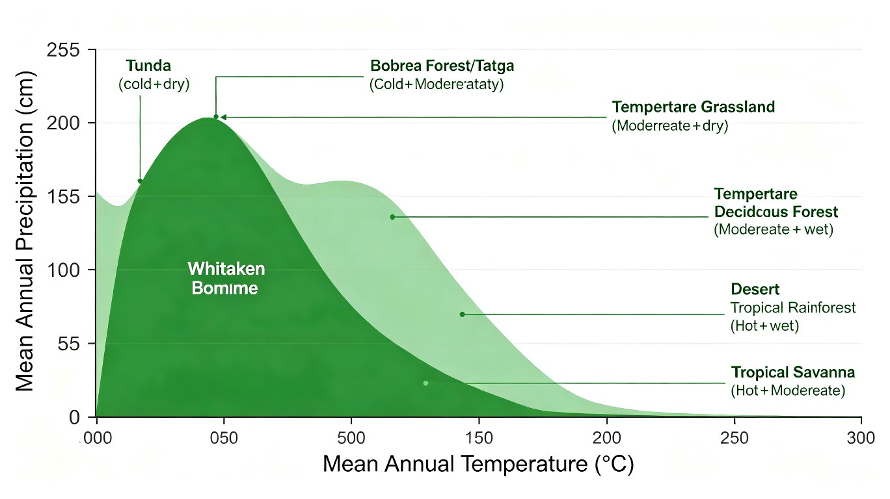

五、大尺度生态学与保护生物学
本章从个体→种群→群落→生态系统的"小尺度"上升到景观-区域-生物圈的"大尺度",并以保护生物学(conservation biology)作为生态学服务于人类社会的"应用出口"。核心线索:
- 景观生态学(landscape ecology):在几 km² 到几百 km² 尺度上,研究斑块-廊道-基质的空间格局及其生态过程
- 生境破碎化(habitat fragmentation):人类活动把连续生境切成零碎小斑块,产生 8 大生态效应
- 集合种群(metapopulation):斑块化的局域种群(local population)通过扩散和灭绝达到动态平衡
- 保护生物学:以 生物多样性(biodiversity)为保护对象,识别 7 大威胁(HIPPO),提出 就地保护 + 迁地保护策略
- 生物安全:外来物种入侵与转基因生物的潜在生态风险
📌 本节命题特征:大尺度生态学与保护生物学是近年高考(尤其江苏卷、全国理综)的高频考点,常以"区域生态修复""长江江豚""川金丝猴""湿地"为情境,考查"生物多样性 3 层次 3 价值""建立自然保护区""廊道与生境破碎化"等。

斑块-廊道-基质(patch-corridor-matrix)——景观的"三要素"
1.1 景观与景观生态学的定义
景观(landscape)是指空间上不同生态系统的镶嵌体(mosaic),尺度通常为几 km² 到几百 km²。例如:一片农田中包含耕地(基质)、田埂树篱(廊道)、小水塘(斑块)。
景观生态学(landscape ecology)是研究景观结构(空间格局)+景观功能(生态过程)+景观动态(时空变化)的学科,核心是"空间格局如何影响生态过程"。代表性模式由 Forman & Godron (1986) 提出,即 斑块-廊道-基质三要素。
1.2 三大要素对比
| 要素 | 英文 | 定义 | 特征 | 举例 |
|---|---|---|---|---|
| 斑块 | patch | 景观中与周围基质不同的面状均质区域 | 面积、形状、边缘、内部生境 | 林窗、池塘、农田、居民点、弃耕地 |
| 廊道 | corridor | 景观中与两侧基质不同的带状(线状)结构 | 连通性,源-汇、过滤、通道、屏障 | 河流、林带、田埂树篱、公路防护林、动物通道 |
| 基质 | matrix | 景观中面积最大、连通性最好、支配景观总体动态的背景结构 | 连续性最高、能量物质流的主背景 | 森林景观中的草坡、农业景观中的大田 |
📌 奥赛高频辨析:
- 判断"哪种结构支配景观":看面积最大 + 连通性最好(不是简单的"最大"),如城市景观中建筑群往往是基质,而非公园
- 判断"斑块 vs 廊道":同种结构,如果形状呈面状(如大的林地)= 斑块;形状呈线状/带状(如狭窄的防护林)= 廊道
- 廊道 = 通道? 廊道的 4 大功能(讲义 P148):
- 栖息地(habitat)——廊道本身可为某些物种提供生境
- 通道(channel)——物种沿廊道迁移/扩散的"走廊"
- 过滤/屏障(filtration/barrier)——阻隔或筛选物质/生物的流动
- 源-汇(source-sink)——廊道中的种群为周围基质种群提供个体扩散(源)或接受个体(汇)
典型考题(讲义 slide 13 改编):"景观生态学'斑块/廊道/基质'模式中,连续性最大、支配景观总体动态的背景结构是?"→ 答案:基质(matrix)。但要小心"公路、河流、林带"等虽然连续性高,但是线状廊道而非面状基质。
1.3 城市景观的判别
| 类型 | 属于城市景观? | 说明 |
|---|---|---|
| 森林和溪流 | ✔ 是 | 城市保留的"自然斑块 + 廊道" |
| 稻田和鱼塘 | ✘ 否 | 属于农村农业景观 |
| 沼泽和草甸 | ✘ 否 | 属于自然湿地/草原景观 |
| 公路和公园 | ✔ 是 | 公路=人为廊道,公园=城市斑块 |
| 工厂和社区 | ✔ 是 | 工厂=工业斑块,社区=居住斑块 |
| 田埂和篱笆 | ✘ 否 | 属于农村农业景观的廊道 |
面积-异质-边缘-隔离-斑格-干扰-遗传-竞争
生境破碎化(habitat fragmentation)是指由于人类活动(农业开垦、城市扩张、道路修筑)把原本连续的大生境切割成若干不连续的孤立小斑块的过程。这是当前全球生物多样性下降的最主要原因(《保护生物学》P148)。
生境破碎化产生 8 大生态效应(按重要性 + 考频排序,务必熟记):
| 序号 | 效应 | 英文 | 核心机制 | 生态后果 |
|---|---|---|---|---|
| 1 | 面积效应 | area effect | 斑块面积 ↓ → 容纳种群数 ↓ | 小种群效应:易遭随机灭绝、近亲繁殖、遗传漂变 |
| 2 | 异质性效应 | heterogeneity | 破碎化使微生境种类减少,环境异质性降低 | 可利用生态位 ↓,专性物种被淘汰 |
| 3 | 边缘效应 | edge effect | 斑块越小,边缘/面积比 ↑,核心区 ↓ | 边缘种(阳性植物、风敏感种)入侵;核心区动物失去庇护所 |
| 4 | 隔离效应 | isolation effect | 斑块间距离 ↑ → 扩散阻力 ↑ | 个体难以到达新斑块,新种群难以建立 |
| 5 | 斑格效应 | patch pattern | 斑块空间布局(线状/岛状/随机)影响迁移 | 线状排列易迁移,随机散布易中断,影响基因交流 |
| 6 | 干扰效应 | disturbance | 破碎化常伴随人类干扰(噪声、人为活动) | 干扰频次 ↑,敏感物种被淘汰,系统稳定性 ↓ |
| 7 | 遗传效应 | genetic effect | 隔离种群间基因流中断,小种群近交衰退 | 杂合度 ↓,有害等位基因纯合,适合度 ↓ |
| 8 | 竞争效应 | competition effect | 破碎化使边缘种 vs 内部种的竞争格局改变 | 广布种挤压狭域种,本地种被外来种取代 |
📌 8 效应之间的层次关系:
- 一级效应(基础):面积、异质性、隔离 —— 直接由"空间格局"决定
- 二级效应(衍生):边缘、斑格、干扰 —— 由一级效应引发的"过程效应"
- 三级效应(终极):遗传、竞争 —— 长期演化后果
📌 奥赛易错点:
- "斑块格局效应"专指斑块布局引起的差异(线状/岛状/随机),与面积效应、隔离效应不同(讲义 P150)
- "边缘效应"包含两个方向:正效应(边缘物种多样性↑)和负效应(核心区生物多样性↓)——奥赛常考"斑块越小,边缘效应越显著"
2.1 典型考题:核心区损失计算
核心区损失问题是奥赛真题高频模型:给定保护区大小 + 道路/电网等"切割方式",求核心区损失面积。
模型(讲义 slide 70 例 1):某 10 km × 10 km 保护区,动物生存核心区需离边界 1 km,若从中央开十字型道路,则核心区损失约为?
- 原核心区 = (10-2)² = 8² = 64 km²(10 边长扣 2 边距 1 km)
- 中央开十字路 → 保护区被分为 4 个 5×5 km 小方块,各扣 1 km 边距
- 后核心区 = 4 × (5-2)² = 4 × 9 = 36 km²
- 核心区损失 = 64 - 36 = 28 km² → 选 B
变体 1(2019 综评):若从中央隔出一条电网(单条道路),则核心区损失 = ?
- 原核心区 = (10-2)² = 64 km²
- 被 1 条横路分割成 2 个 5×10 km 长方形
- 后核心区 = 2 × (5-2) × (10-2) = 2 × 3 × 8 = 48 km²
- 核心区损失 = 64 - 48 = 16 km² → 选 B
📌 建模关键:
- 核心区 = 总面积 - 离边界 1 km 的"缓冲区"
- 切割后核心区 = 各分块都需扣 1 km 边距
- 十字路 = 1 纵 1 横 → 4 个小方块;单条路 = 1 横 → 2 个长方形
集合种群理论:局域种群的生灭平衡
集合种群(metapopulation)是由空间上彼此隔离、但通过扩散相互联系的局域种群(local population)所组成的种群系统(Hanski 1991,讲义 slide 79 例题背景)。
核心机制:
- 每个局域种群都面临高灭绝风险(因为小,易受随机扰动)
- 同时,空斑块可被从邻近斑块扩散过来的个体"重新殖民"
- 只要新建种群速率 ≥ 灭绝速率,物种就能在斑块化生境中续存
📌 奥赛易混点:
- 集合种群 ≠ 集合群落:集合种群是"同物种"的局域种群集合;集合群落(metacommunity)是"多物种"的局域群落集合
- 集合种群 ≠ 复合种群:目前两个术语常混用,广义上"metapopulation"≈"composite population"——都是"小种群"在斑块化生境中的"生-灭"动态
3.1 集合种群理论 4 大核心命题(讲义 P564 + slide 79)
| 命题 | 内容 | 生态学/保护学意义 |
|---|---|---|
| ① 隔离不利于续存 | 斑块间隔离程度 ↑ → 个体扩散 ↓ → 新建种群率 ↓ → 物种续存概率 ↓ | 支持"建立生态廊道"政策(连接孤立斑块) |
| ② 局域种群有灭绝风险 | 小种群对随机事件(疾病、风暴、遗传漂变)敏感,局域灭绝不可避免 | 大斑块、核心区保护可降低小局域种群的灭绝率 |
| ③ 大局域种群是"源" | 较大的局域种群扩散力强,为周围小斑块提供"繁殖个体" | 识别"源-汇"格局,优先保护大种群斑块 |
| ④ 扩散个体多 | 集合种群动态对扩散能力强的个体有选择优势(高扩散力个体才能"穿过"隔离) | 廊道建设需考虑目标物种扩散能力 |
3.2 集合种群研究的适用对象
集合种群生态学研究需满足 3 个条件(讲义 slide 79 例 15):
- 生境斑块化:栖息地天然或人为破碎
- 局域种群可灭绝 + 可重建:物种扩散能力适中(过弱→无法重建,过强→整个区域成为单一种群)
- 研究时空可行:物种世代短、易观察、斑块大小可识别
📌 奥赛典型判断(讲义 slide 79 例 15):适合开展集合种群研究的动物是?
- A. 蝴蝶 ✔:生境斑块化明显(草地斑块),世代短,易观察
- B. 东北虎 ✘:大斑块,扩散范围太大,整片森林=单一种群
- C. 海豚 ✘:海洋大尺度连续生境,无明显斑块
- D. 大熊猫 ✘:极度濒危,扩散能力太弱,已经无法维持集合种群动态
- E. 蜣螂(粪金龟)✔:世代短,生境斑块化(兽粪点),扩散适中
→ 答案:A、E
HIPPO 5 威胁 + 国内 5 因素 + 保护策略
4.1 威胁生物多样性的 7 大因素
《保护生物学》(Primack 2002)归纳的 7 大威胁(讲义 slide 73):
- 生境破坏(habitat destruction)——城市化、农业开垦、森林砍伐
- 生境破碎化(habitat fragmentation)——见 §2
- 生境退化(habitat degradation)——污染、过度放牧、土壤侵蚀
- 过度利用(overharvesting)——乱捕滥猎、过度捕捞、过度采集
- 全球气候变化(global climate change)——CO₂ 升高、气候带北移
- 外来物种入侵(invasive species)——见 §6
- 疾病(disease)——尤其是新发传染病、宿主-病原体协同变化
📌 HIPPO 5 大威胁(E.O. Wilson《生命的未来》)——更简化的口诀版(讲义 slide 73):
- Habitat loss(生境丧失)
- Invasive species(外来入侵)
- Pollution(污染)——教材 HIPPO 第一个 P
- Population(人口增长)——教材 HIPPO 第二个 P
- Overharvesting(过度利用)
4.2 保护策略——就地保护 vs 迁地保护
| 策略 | 定义 | 主要形式 | 适用情况 |
|---|---|---|---|
| 就地保护(in situ) | 在物种原生境中保护 | 自然保护区(核心区+缓冲区+实验区)、国家公园 | 物种生境尚存、原生境可保护 |
| 迁地保护(ex situ) | 将物种移出原生境,在人工环境中保护 | 动物园、植物园、种子库、精子库、试管婴儿等 | 原生境破坏严重、物种极度濒危 |
| 离体保护 | 以配子、胚胎、DNA 等形式保存 | 精子库、卵子库、胚胎库、种质资源库 | 辅助迁地保护 |
📌 自然保护区 3 区结构(高考核心):
- 核心区(core area):严格保护,禁止任何人为活动,保留原始生境
- 缓冲区(buffer area):核心区外围,允许有限科研活动
- 实验区(experimental area):最外层,允许科研、教学、参观、适度资源利用
📌 自然保护区的功能(讲义 slide 74 例 17-2):
- 保护栖息地植被和物种喜食的植物(题干 b 答案)
- 提供生态廊道,促进种群间基因交流(题干 a 答案)
奥赛典型辨析(slide 74):"川金丝猴保护措施"正确选项是 a(建立生态廊道,促进种群间基因交流)+ b(保护栖息地植被和喜食植物);c(标志重捕法)只能"估算"种群数量,不能"精确监测"——这是混淆偷换的常见陷阱;d(主要依赖迁地保护)违背"以就地保护为主"原则。
4.3 标志重捕法的局限(讲义 slide 74 例 17-3)
标志重捕法(mark-recapture)是估算动物种群密度的经典方法(详见 ch11-2-1 §1.2)。在保护生物学应用中的局限:
- 难以"精确监测":标志-重捕比仅给出"估算值 + 置信区间",存在统计误差
- 受标志行为影响:标志物可能影响动物行为(被回避、被捕食概率↑)
- 受扩散影响:个体可能迁入/迁出,破坏"种群封闭"假设
- 对濒危物种压力大:频繁捕捉-标志-重捕对极小种群可能造成额外损伤
📌 奥赛判别口诀:"估算可用、监测不宜、保护慎用"——标志重捕法可用于"种群数量估算",但不适合作为"精确监测"的主要手段。
3 层次(物种/遗传/生态系统)+ 3 价值(直接/间接/潜在)
5.1 生物多样性的 3 个层次
| 层次 | 英文 | 内涵 | 例子 |
|---|---|---|---|
| ① 遗传多样性 | genetic diversity | 同种内不同种群间 + 种群内不同个体间的遗传变异 | 水稻的 10000+ 栽培品种;野生稻 vs 栽培稻的基因差异 |
| ② 物种多样性 | species diversity | 一定区域内物种数 + 各种群的相对多度 | 热带雨林 > 温带森林 > 苔原 的物种数差异 |
| ③ 生态系统多样性 | ecosystem diversity | 生物群落 + 生境 + 生态过程的多样化 | 森林、草原、荒漠、湿地、海洋生态系统的差异 |
📌 奥赛常考点(讲义 slide 73 例 3-2):"认识生物多样性的最基本层次是?"
- A. 物种多样性
- B. 遗传多样性
- C. 景观多样性 ← 干扰项(没有这个层次)
- D. 生态系统多样性
→ 答案:A. 物种多样性——因为"物种"是分类学的基本单位,也是生物多样性最直观的体现。遗传多样性是物种内层面的、生态系统多样性是物种间层面。
📌 奥赛另考点(讲义 slide 73 例 3-1):"确定生物种类保护级别的首要因素是?"
- A. 直接利用价值
- B. 间接利用价值
- C. 潜在利用价值
- D. 灭绝的可能性 ← 正确
→ 答案:D——保护级别的核心排序依据是"物种的濒危程度(灭绝风险)",而非"对人类当下的利用价值"。例如,桃花水母(无经济价值)反而被列为保护物种,这是基于"灭绝风险"而非"经济价值"。
5.2 生物多样性的 3 类价值
| 价值 | 英文 | 内涵 | 举例(讲义 slide 66 例 11) |
|---|---|---|---|
| ① 直接价值(direct value) | direct use value | 人类直接利用生物多样性所获得的价值 | 食用(鳜鱼鲜美)、药用(青蒿素)、工业原料(棉花)、美学/观赏(白鹭带来美的享受) |
| ② 间接价值(indirect value) | indirect use value | 生物多样性在生态系统功能中的作用,常指生态功能价值 | 涵养水源、保持水土、净化空气、调节气候、生态价值(芦苇蒲草净化水质)、维持生态平衡 |
| ③ 潜在价值(potential value) | potential value | 人类目前尚未发现、但将来可能利用的价值(也叫"未知价值"或"选择价值") | 桃花水母(目前不知有何用)、野生稻的抗病基因(将来可培育抗病水稻) |
📌 奥赛典型题(讲义 slide 66 例 11 完整解析):"某乡村描述:①家住山脚下,河从门前过,飞翔的白鹭带来美的享受;②不知道河里的桃花水母有啥用,水里的鳜鱼很鲜美;③河岸的芦苇、蒲草被用来编织斗笠和蓑衣;④故乡那'斜风细雨'的仙境多亏了这条河。关于该湿地资源价值叙述正误的是?"
- A. ①②包含了直接利用价值和潜在利用价值
- B. ②③包含了直接利用价值和间接利用价值
- C. ③④包含了直接利用价值和间接利用价值 ✔
- D. ①④包含了潜在利用价值和间接利用价值
逐项分析:
- ①"白鹭带来美的享受"=直接价值(美学观赏);但题干说"飞翔"暗指其在生态系统中是食物链一环,既属直接也属间接
- ②"桃花水母不知有啥用"=潜在价值;"鳜鱼很鲜美"=直接价值(食用)
- ③"芦苇、蒲草编织斗笠"=直接价值(工业原料);"净化水质"=间接价值(生态功能)—— 必有一项直接+间接
- ④"斜风细雨仙境"=间接价值(景观/生态)
→ 答案:C
5.3 生物多样性的 4 大意义(讲义归纳)
- 直接经济价值——食物、药物、木材、纤维、燃料等(直接价值)
- 间接经济价值——生态系统服务(间接价值)
- 生态学意义——维持生态系统稳定性、保持生态平衡(间接价值)
- 科学文化价值——美学、教育、科研、文学艺术(直接价值)
📌 奥赛题 2025 江苏高考 23(讲义 slide 67 案例):"从废弃矿区建设成为中国最美的乡村湿地之一"——"综合提高其经济、生态等生物多样性的直接价值" 错误。因为"生态价值"属于间接价值,不是直接价值。
外来种 vs 入侵种 + 入侵机制 + 生态危害
6.1 基本概念辨析
| 概念 | 英文 | 定义 | 举例 |
|---|---|---|---|
| 外来物种 | alien / exotic species | 出现在自然分布区之外的物种 | 欧洲的番茄引入中国(栽培) |
| 归化种 | naturalized species | 外来种在野外能自我维持种群(繁殖成功) | 加拿大一枝黄花、小龙虾(克氏原螯虾) |
| 入侵种 | invasive species | 归化种中对生态、经济、健康造成危害的物种 | 水葫芦、紫茎泽兰、福寿螺、美国白蛾 |
📌 奥赛易错点(讲义 slide 71 例 19):"所有的外来物种都是入侵种,都是有害的" → 错误!
- 外来物种 ≠ 入侵种。番茄、小麦、玉米等都是外来物种,但经过长期栽培已"为我所用",不属于入侵种
- 外来物种"无害"(未在野外建立种群)的也不是入侵种,只是"外来栽培种"
- 外来物种"归化"但"无害"的(如部分观赏花卉)也不是入侵种
6.2 入侵途径
- 自然扩散——风媒(种子)、鸟媒(果实)、昆虫媒、自力扩散(如紫茎泽兰的种子随风飘)
- 人类活动无意携带——压舱水、苗木运输、农产品集装箱(如海洋生物入侵)
- 人类有意引入——作为食物、饲料、观赏、生态修复(讲义 slide 71 例 19:"有些外来物种是人类有意引入的" → 正确)
📌 典型案例:
- 福寿螺——作为食用螺引入,但因味道差被弃养,在南方水田中泛滥,危害水稻
- 小龙虾——作为食用引入,在长江流域泛滥,但目前已被"反利用"为美食,危害反而受控
- 加拿大一枝黄花——作为观赏花卉引入,因无天敌在华东泛滥
- 互花米草——作为护滩植物引入,在沿海滩涂泛滥,破坏滩涂生态
- 巴西龟——作为宠物引入,在中国野外建立种群,挤压本土龟类
6.3 入侵的生态危害
外来入侵种对生态系统的危害(讲义 slide 72 例 1):
- 破坏生态系统的完整性——挤压本土物种、改变食物网结构
- 影响土著物种的遗传多样性——入侵种可与本土种杂交,导致基因渗透(如烟粉虱与本土种杂交、银鲫问题)
- 破坏自然景观的完整性——单一入侵种形成"绿色沙漠"
- 外域病虫害入侵危害本地生物——如松材线虫(随木材包装箱传入)
📌 奥赛题 2023 盐城模考(slide 83 例 21 解析):"引种外来耐盐植物大米草以图实现'种青引鸟'。湿地后期出现了大米草和芦苇两个优势种"。引种大米草"种青引鸟"是利用了生物多样性的什么价值?
- A. 直接价值——吸引鸟类观赏、提供食物给候鸟
- B. 间接价值——生态功能
- C. 潜在价值——目前未知的用途
- D. 直接和潜在价值
→ 答案:A. 直接价值(因为"种青引鸟"是当下对生态修复功能性的直接利用)。
6.4 外来入侵的 10/100 法则(Ten's Rule,讲义补充)
外来物种入侵的"10/100 经验法则"(Williamson & Fitter 1996):
- 每 100 种外来物种,约 10 种能在野外归化
- 每 10 种归化种,约 1 种成为入侵种
即约 1% 的外来种最终成为有危害的入侵种。意味着大量外来种是"无意识引入但无害"的(如番茄)。
基因逃逸 + 非靶效应 + 终止子技术争议
7.1 转基因生物(GMO)的 4 大生态风险
转基因生物(genetically modified organism, GMO)是指利用基因工程技术将外源基因整合进受体生物基因组,获得新性状的生物。奥赛常考其生态风险(讲义 slide 72 例 2):
- 本身变为杂草——转基因作物获得某些"竞争性"性状(如抗虫、抗除草剂)后,可能"野化"为杂草
- 野生近缘种变为杂草(基因逃逸 gene flow / 基因漂流)——外源基因(如抗虫、抗除草剂)通过花粉漂移传给野生近缘种,使其获得优势而变成"超级杂草"
- "非靶效应"(non-target effect)——抗虫转基因作物(如 Bt 抗虫棉)的毒素会杀伤非目标生物(如传粉昆虫、土壤微生物、天敌昆虫),破坏食物网
- 目标害虫产生抗性——长期使用单一 Bt 毒素,害虫可能演化出抗性,使转基因作物失效(讲义 slide 71 例 18-B:"棉铃虫产生抗性,影响转基因抗虫棉的种植效果")
📌 奥赛题 2014 国赛 45(讲义 slide 71 例 18):"我国从 1997 年开始大面积种植转基因抗虫棉来防治棉铃虫,下列对其可能引发的生态风险判断正误的是?"
- A. 外源基因逃逸到杂草中,产生抗虫杂草 ✔(正确答案)
- B. 棉铃虫产生抗性,影响转基因抗虫棉的种植效果 ✔
- C. 其它昆虫受到抗虫棉的毒杀 ✔(非靶效应)
- D. F₂ 代棉种产生的植株不具有抗虫性状 ✘(杂合子仍能表达,稳定遗传)
→ 答案:A、B、C 都正确,D 错误。
7.2 "终止子"技术的生物安全争议
终止子技术(terminator technology)是指在转基因作物中加入 3 个终止密码子,使其种子在胚胎发育后期产生一种毒素,只能得到成熟但不育的种子(讲义 slide 72 例 2 讨论)。
其生物安全问题:
- 大量生物种子不育——危及生物圈遗传多样性的安全
- 对遗传多样性有负面影响——农民无法留种,只能每年购买新种子,导致农家品种快速消失
- 可能产生新的病毒或新疾病——终止子技术涉及病毒启动子,可能重组产生新病原体
- 不利于农业可持续发展——农民丧失"育种自主权",对发展中国家农民尤其不利
📌 奥赛态度:"终止子"技术在国际上争议极大,目前已被联合国《卡塔赫纳生物安全议定书》明文限制商业化。
7.3 标记重捕法在濒危物种中的伦理限制(讲义 slide 71 例 17)
在濒危野生动物的人工繁殖过程中,合理做法是?
- A. 限制初生幼体与人类接触 ✔(避免产生"错误印记",使其无法回归自然)
- B. 增强初生幼体与人类接触 ✘(会导致印记错误)
- C. 强化人工选择,培育对人类亲和性高的后代 ✘(人类亲和性 = 丧失野性,不可放归)
- D. 建立经典条件反射,让动物获得一系列技能 ✘(对野生动物会增强对人的依赖)
→ 答案:A
📌 核心原则:"印记"决定行为——初生幼体会对"第一眼看到的运动物体"形成印记(imprinting),若印记对象是人类,它们成年后会把人类视为"配偶/同伴",无法回归自然种群,失去繁殖能力,反而加速物种灭绝。
湿地的多重价值与生态修复
8.1 湿地的 5 大生态功能
湿地(wetland)是陆地与水生生态系统的过渡带,兼有陆生和水生生态系统的特点,常被称为"地球之肾"。其 5 大生态功能:
- 调蓄洪水——雨季蓄水、旱季释放,调节径流(间接价值)
- 净化水质——芦苇、香蒲等湿地植物可吸收 N、P、重金属(间接价值)
- 维持生物多样性——大量水鸟、鱼类的栖息、繁殖地(直接+间接价值)
- 固碳——湿地(尤其泥炭地)的有机碳储量巨大(间接价值)
- 提供资源——芦苇可编织、鱼类可食用、景观可观赏(直接价值)
8.2 湿地的"种青引鸟"——直接价值的典型应用(讲义 slide 83 例 21)
案例:某海滩引种大米草以实现"种青引鸟"——这是利用生物多样性的 直接价值(观赏、吸引鸟类、营造景观)。
但大米草本身是外来入侵种(互花米草或大米草,源自英美),引种后泛滥,反成危害——体现"外来种利用的双刃剑"特征。
📌 奥赛辨析:
- "种青引鸟"是直接价值(主动利用)
- "大米草净化水质"是间接价值(生态功能)
- "大米草的潜在药用价值"是潜在价值(未知)
- 三者常组合,需根据具体情境判断
精选 4 题:大尺度生态 + 保护 + 物质循环 + 群落
9.1 真题 1:川金丝猴保护(2025 江苏高考 23,讲义 slide 74)
题干:川金丝猴是我国特有的珍稀濒危物种。回答下列问题:
(1) 川金丝猴警戒行为具有监测捕食者和同种个体的功能,这说明生物之间的关系有 ____。
(2) 川金丝猴以植食为主,消化道中部分微生物直接参与高纤维食物的消化,这些微生物与川金丝猴构成 ____ 关系。
(5) 保护川金丝猴可采取的措施有 ____(多选)。
a. 建立川金丝猴生态廊道,促进种群间基因交流
b. 保护川金丝猴栖息地植被和它喜食的植物
c. 需用标志重捕法定期重捕,以精确监测种群数量
d. 主要依赖迁地保护,扩大川金丝猴种群数量
答案:
- (1) 捕食和种内竞争(捕食者+同种个体)
- (2) 互利共生(mutualism)(微生物获得稳定栖息环境+营养,川金丝猴获得消化纤维素的能力)
- (5) ab(建立生态廊道 + 保护栖息地)
📌 易错点:
- c 错:标志重捕法只能"估算"种群数量,不能"精确监测"(精度受限于样本量、标志物影响、个体扩散等)
- d 错:"主要依赖迁地保护"违背保护原则;川金丝猴野外种群仍存在,应优先就地保护
9.2 真题 2:黑白瓶法意外损坏(2014 全国理综,讲义 slide 54)
题干:黑白瓶法测定水体初级生产力,基本过程:取水样测初始溶氧 IB → 分装入白瓶(透光)+黑瓶(不透光)放回水层 → 24 h 后测白瓶 LB 和黑瓶 DB → 计算总生产量(GPP)、净生产量(NPP)、呼吸量(R)。
若意外损坏黑瓶,无法测得 DB,哪些数据无法获得?
- A. 总生产量
- B. 净生产量
- C. 呼吸量
- D. 黑瓶盛水量
公式:
- WDO = LB - IB(净光合作用 = 白瓶溶氧 - 初始溶氧)
- BDO = DB - IB(呼吸量 = 初始溶氧 - 黑瓶溶氧)
- GPP = WDO + BDO = LB - DB(总光合作用)
- NPP = WDO(净生产量)
分析:
- DB 未知 → BDO 未知(呼吸量)
- DB 未知 → GPP 未知(总生产量)
- NPP = WDO = LB - IB,可由白瓶直接测得,可知
- 黑瓶盛水量与生态指标无关,可知(设计参数)
→ 答案:A、C
9.3 真题 3:碳达峰与碳中和(2024 盐城模考,讲义 slide 81)
题干:有关碳达峰和碳中和叙述正误的是?
- A. 碳中和是指生产者固定的 CO₂ 与所有生物呼吸产生的 CO₂ 量相等
- B. 碳循环是指 CO₂ 在生物圈的循环过程,减缓温室效应需各国配合
- C. 增加生产者是碳中和的措施,碳达峰后生态系统的碳循环会减缓
- D. 生态足迹的值越大,对环境影响越大,不利于碳中和的目标实现
逐项分析:
- A ✘:碳中和是"排放的 CO₂ 与吸收的 CO₂ 抵消",不是"生产者固定 = 呼吸排放"。碳中和包括工业 CO₂ + 自然排放 vs 自然吸收 + 人为减排(如植树、可再生能源)
- B ✘:碳循环不止在生物圈,还在岩石圈、化石燃料中(以"地质大循环"形式);CO₂ 在大气圈-水圈-生物圈-土壤圈-岩石圈间循环
- C ✘:碳达峰后碳循环速度不一定减缓(碳的吸收和释放仍在进行);"碳达峰"≠"碳循环减缓"
- D ✔:生态足迹越大 → 人类活动对环境压力越大 → 不利于碳中和
→ 答案:D
9.4 真题 4:生境破碎化核心区损失(讲义 slide 70)
题干:某 10 km × 10 km 的动物保护区,该动物生存核心区需离边界 1 km,若从中央开十字型道路,则核心区的损失约为?
- A. 0 km²
- B. 28 km²
- C. 36 km²
- D. 64 km²
详细推导:
- 原核心区 = (10-1×2)² = 8² = 64 km²(10 边长扣 2 边 1 km 边距)
- 开十字路后,保护区被分为 4 个 5×5 km 小方块
- 各小方块核心区 = (5-1×2)² = 3² = 9 km²(5 边长扣 2 边 1 km 边距)
- 后核心区 = 4 × 9 = 36 km²
- 核心区损失 = 64 - 36 = 28 km²
→ 答案:B
📌 建模要点:
- "边距"是指核心区距保护区边界的最小距离(本题 1 km)
- 十字路 = 1 纵 1 横,等分为 4 个小方块;单条路 = 1 横,等分为 2 个长方形
- 各小方块都需扣 1 km 边距(核心区 = 小方块边长 - 2 边距)
§5 大尺度生态学与保护生物学 · 全章小结
- 景观生态学三要素:斑块(面状)、廊道(带状,4 功能:栖息/通道/过滤/源汇)、基质(连续性最大)
- 生境破碎化 8 效应:面-异-边-隔-斑-干-遗-竞(面积、异质、边缘、隔离、斑格、干扰、遗传、竞争)
- 集合种群 4 命题:隔离不利于续存、局域种群可灭绝、大种群是源、扩散能力强者得益
- 保护生物学 7 大威胁(生境破坏/破碎/退化、过度利用、气候、外来入侵、疾病)或 HIPPO 5 威胁
- 保护策略:就地保护(自然保护区 3 区)为主,迁地保护为辅,标志重捕法只能"估算"不能"精确监测"
- 生物多样性 3 层次:遗传多样性(微观)、物种多样性(最基本层次)、生态系统多样性(宏观)
- 生物多样性 3 价值:直接价值(食用/药用/观赏/工业原料)、间接价值(生态功能)、潜在价值(未知)
- 保护级别的首要依据:物种的灭绝可能性,而非利用价值
- 外来物种 ≠ 入侵种:入侵种必造成危害;外来种可能"无害"或"有益"
- 转基因 4 大风险:本身变杂草、基因逃逸使近缘种变杂草、非靶效应、害虫产生抗性
- 湿地:湿地是"地球之肾",有 5 大生态功能(调蓄/净化/多样/固碳/资源)
- 初生动物的保护伦理:限制幼体与人类接触,避免"印记错误",确保野化能力